Este módulo do curso apresenta o percurso com os tópicos abordados e o objetivo geral que é a instalação e configuração do ambiente de desenvolvimento, além do funcionamento e uso prático do inspetor de elementos do navegador e a criação da primeira página HTML
Editor: Será utilizado o VS Code, uma IDE1 para a construção do arquivo HTML. Foi apresentado a página do desenvolvedor para baixar2 o instalador além de algumas configurações úteis como a instalação da extensão Live Server para testes e verificação da página.
1: Integrated Development Environment (Ambiente de Desenvolvimento Integrado)
2: https://code.visualstudio.com/download - (Link da página)

Os principais navegadores de internet possuem ferramentas de desenvolvimento (DevTools ou Inspetor de Elementos), que permite visualizar, modificar temporariamente os elementos e seus atributos, além de outros recursos, como monitorar a rede e a performance de uma página, o que ajuda os desenvolvedores a identificar possíveis falhas.Para ativar o DevTools basta pressionar F12 do teclado ou com o botão da direita do mouse abrir um menu e selecionar "Inspecionar".
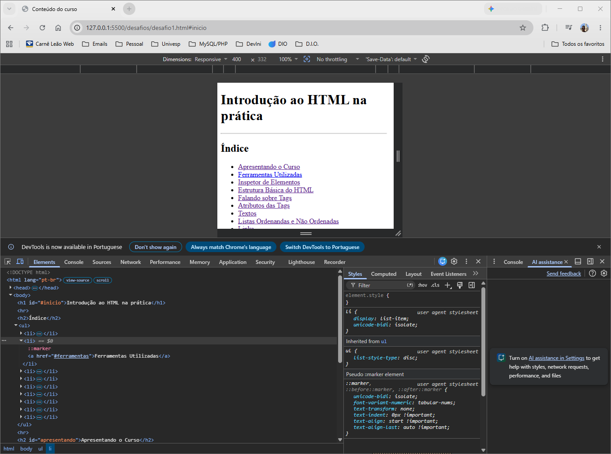
Neste módulo é apresentado como criar uma pasta de trabalho, abrir essa pasta com o VS Code e criar o arquivo inicial, que por convenção é denominado index.html. A estrutura básica de um arquivo:
<html>: Tag raiz que envolve todo o conteúdo do documento e </html> é a tag de fechamento.
<head>: Contêiner para metadados importantes, mas que não são exibidos para o usuário e </head> é a tag de fechamento.
<body>: Define o corpo do documento e contém tudo que é apresentado ao usuário, como títulos, parágrafos, imagens, tabelas, listas, hiperlinks, etc. </body> é a tag de fechamento.
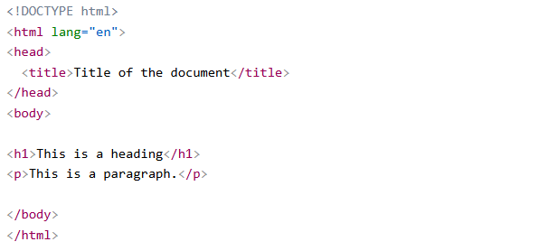
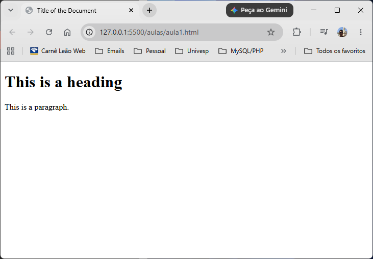
Além disso, também foi apresentado o acionamento da extensão Live Server para visualizar no navegador a página que está sendo construída, inserindo alguns elementos como <title> dentro do elemento <head> para apresentar um título na aba do navegador, e um texto utilizando <h1> para títulos e <p> para parágrafos dentro do elemento <body>
O módulo apresenta com mais detalhes o uso de alguns dos elementos mais comuns e como se comportam:
<h1>: Define o cabeçalho da página e possui níveis de <h1> para títulos mais importantes até <h6> para títulos ou subtítulos menos importantes.
<p>: Define um parágrafo.
<i>: Modifica a fonte para itálico.
<strong>: Modifica a fonte para negrito.
Podemos utilizar uma combinação entre essas tags:
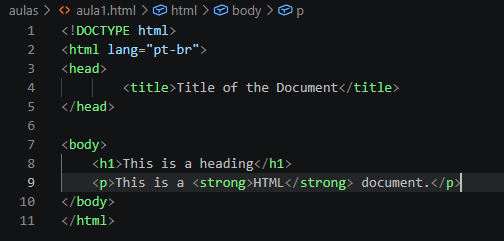
e ">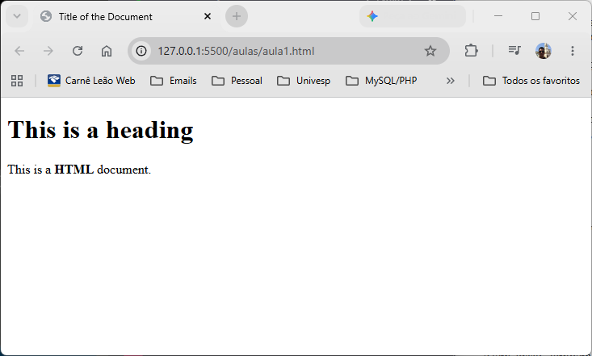
e ">Notamos que somente a palavra HTML está em negrito.
<input>: Define um campo de entrada em que o usuário pode inserir dados, muito utilizado em formulários. É um caso de elemento HTML que não precisa de uma tag de fechamento.
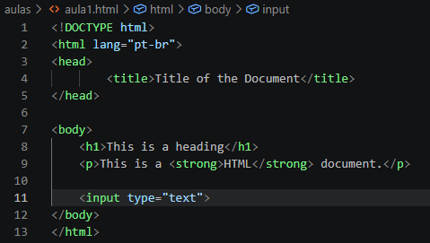
">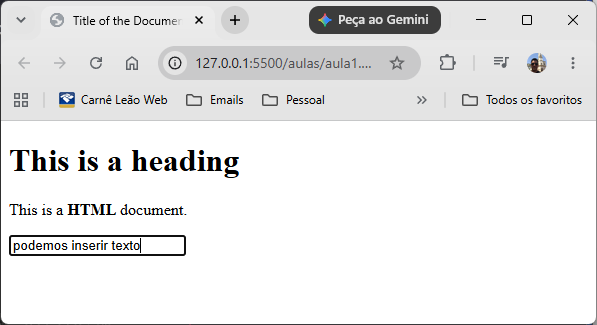
"><img>: Usado para incorporar uma imagem na página HTML. Por definição possui dois atributos obrigatórios que são SRC que especifica o caminho para a imagem e ALT que especifica um texto alternativo caso a imagem não possa ser exibida por algum motivo.
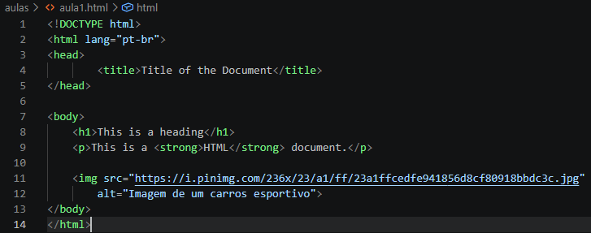
com o caminho SRC para uma endereço na internet onde a imagem esta alocada.">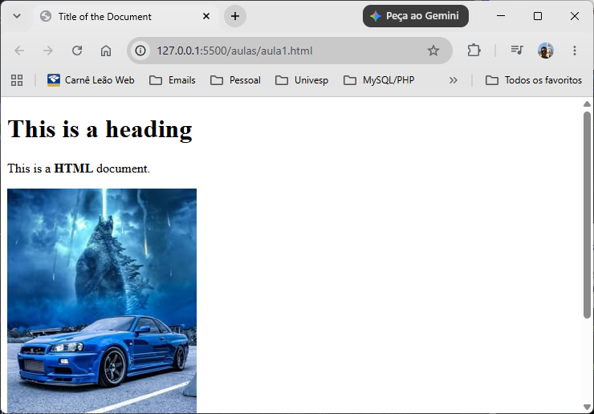
Atributos de Tags são informações extras colocadas dentro da tag de abertura para modificar a maneira como um elemento é apresentado ou como se comporta dentro da página. Seu formato é nome e valor (por exemplo <p style="color: green;">) altera a cor das letras.
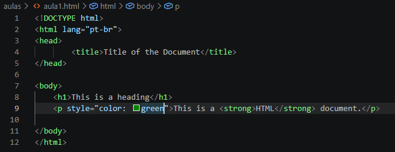
com atributo STYLE e valor COLOR: green para alterar a cor da fonte para verde">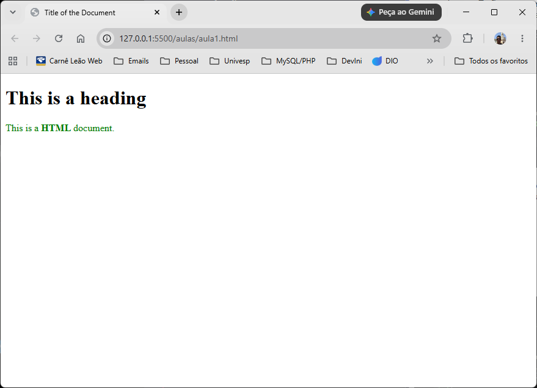
Existem os Atributos Globais que podem ser utilizados com todos os elementos HTML, e outros atributos mais específicos utlizados por determinados elementos.
Atributos Globais mais comuns: class, id, style.
Para elementos específicos como <input>, há uma gama de atributos, alguns específicos para a tag, como por exemplo TYPE que define o tipo de dado, MAXLENGHT que define o número máximo de caracteres, entre outros.
No site https://www.w3schools.com/html/default.asp podemos ter acesso a informações mais detalhadas sobre tags, atributos e outros recursos para o desenvolvimento HTML.
O módulo faz um aprofundamento no uso de elementos HTML para textos, como as tags <h1> para cabeçalhos, <p> para parágrafos, <strong> para realçar partes do texto em negrito, <i> modificando a fonte para itálico e <blockquote> usado em citações, personalizando a página. Ex:
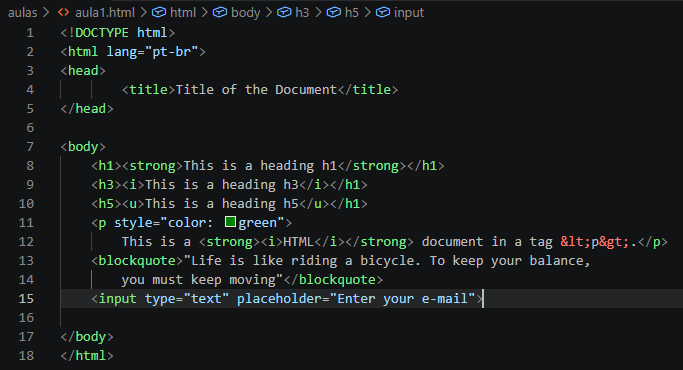
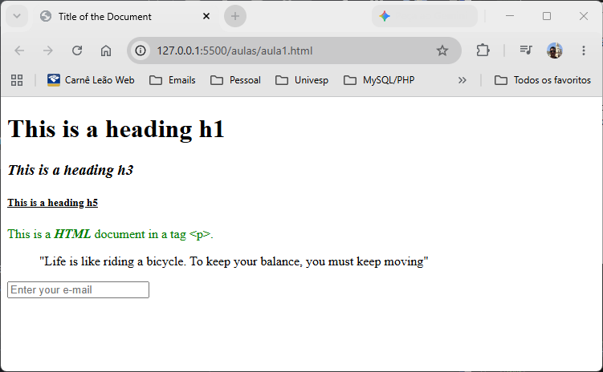
As tags <ol> para listas ordenadas e <ul> para listas não ordenadas são muito utilizadas em HTML para agrupar itens relacionados dentro de uma página. Elas não trabalham sozinhas, cada item da lista deverá estar dentro da tag filha <li>item</li>
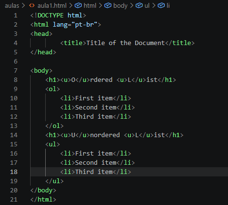
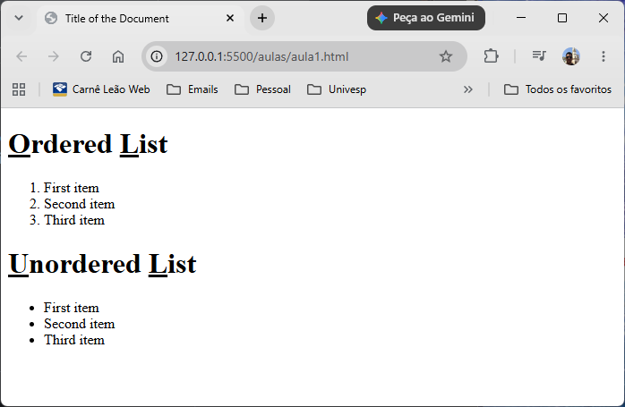
A tag <a> é muito utilizada para direcionar o usuário para outras páginas ou navegar dentro da mesma página. Veremos dois casos de uso.
Primeiro um caso de link para outro site:
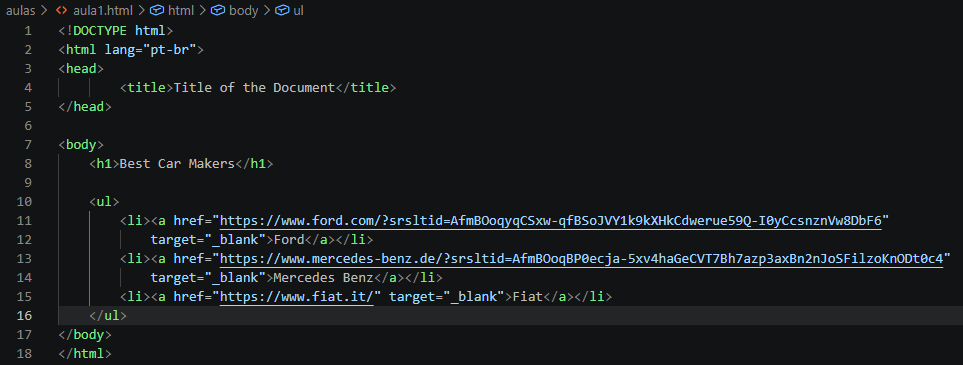
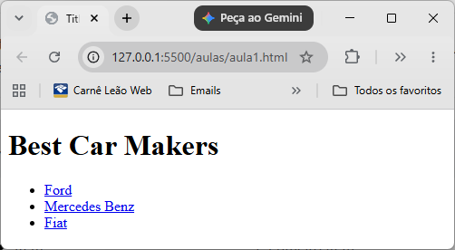
Ao aproximarmos o cursor a um dos itens, ele muda para a mãozinha, o que significa que é um hiperlink e quando clicamos ele direciona para uma nova página. O atributo target dentro da tag <a> diz para o navegador abrir uma nova aba para exibir a página destino.
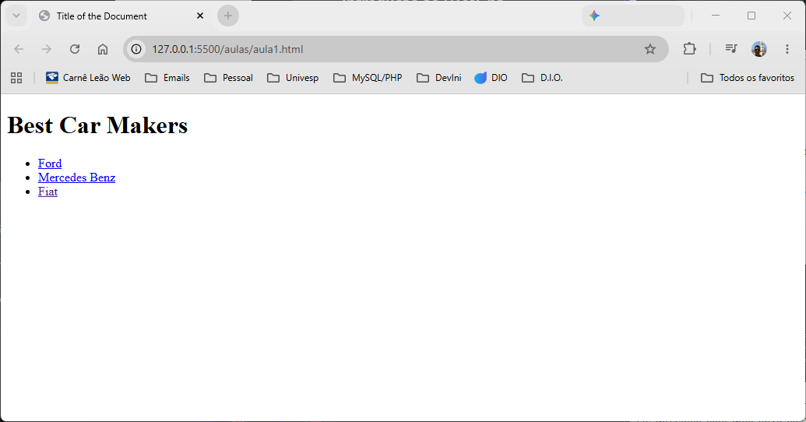
Note que na página original, o item muda de cor depois de clicado, e foi aberto uma nova aba para o site de destino.
DIO.me: https://www.dio.me/
VS Code: https://code.visualstudio.com/
DevTools Google: https://developer.chrome.com/docs/devtools
W3 Schools: https://www.w3schools.com/